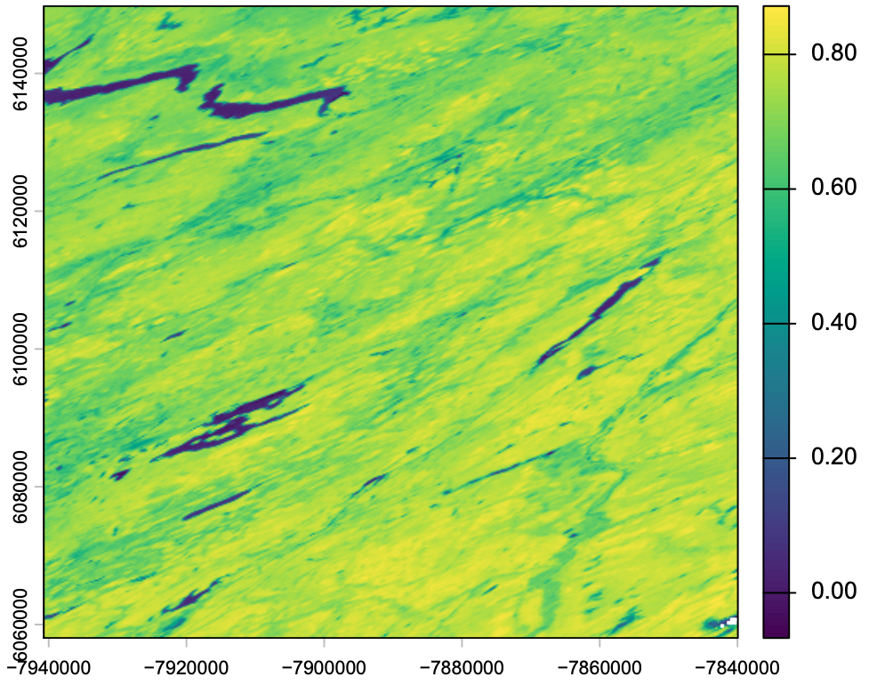

Projects
A selection of academic and applied projects showcasing my experience in GIS, remote sensing, spatial analysis, and geospatial programming.

Mapping Shoreline Land Cover Change in Cable Bay, British Columbia (2020–2025) Using Sentinel-2 Imagery and Supervised Classification.
ArcGIS Pro | QGIS | R | Maximum Likelihood Classification | Spatial Analysis
View Project →
Terrain Analysis and Riparian Area Management
Applied GIS hydrological modelling to delineate stream networks, watersheds, and riparian management areas in Nahmint Valley, BC.
ArcGIS Pro | Python | QGIS
View Project →
Green Space Equity and Spatial Regression
Combined Landsat imagery and census data to investigate vegetation patterns and neighbourhood characteristics across Vancouver.
ArcGIS Pro | SQL | PostGIS | GWR
View Project →
MODIS NDVI and Forest Change Time-Series Analysis
Used R and multi-year satellite imagery to examine vegetation trends and quantify forest gain and loss over time.
R | MODIS | Landsat | NDVI | BFAST
View Project →